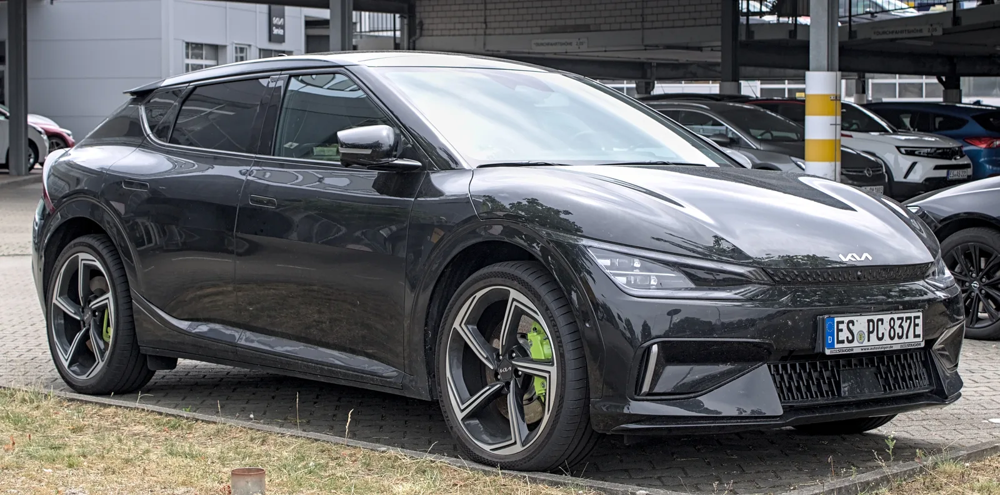
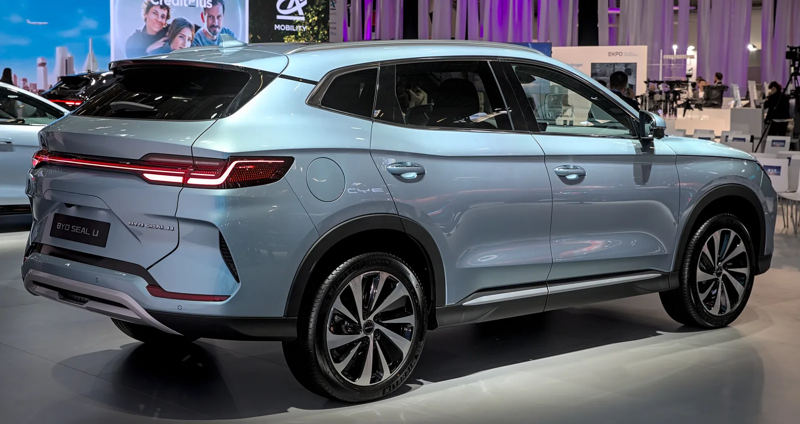
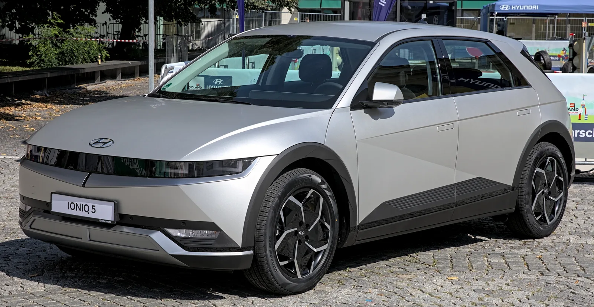

▲ BYD 아토3(독일 만하임). 중국 6개 완성차 그룹은 2026년 상반기 전 세계 전동화차 판매의 62.3%를 차지했다 ⓒ HubiB, Wikimedia Commons (CC BY 4.0)
지난해까지만 해도 국내에서 팔리는 전기차 10대 중 1대꼴이던 중국산이, 올해는 3대 중 1대에 육박했다. 업계와 정부 통계가 일제히 같은 경고음을 내면서, 미국 IRA(인플레이션 감축법)식 첨단제조생산세액공제(AMPC)를 본뜬 '국내생산촉진세제' 도입론이 국회와 업계에서 동시에 힘을 받고 있다.
한국자동차모빌리티산업협회(KAMA)에 따르면 국내 전기차 시장에서 중국산이 차지하는 점유율은 2022년 4.7%에서 2025년 33.9%로 뛴 데 이어, 2026년 1~7월 누적 기준으로는 35.3%까지 올라섰다. 같은 기간 국산 전기차 점유율은 75%에서 57.2%까지 내려앉았다. 세계 시장에서도 중국 업체들의 존재감은 갈수록 커지고 있다. 지금까지 확인된 수치와 논의 상황을 정리했다.
1. 국내 시장 — 2년 만에 4.7%에서 35.3%로
가장 먼저 확인해야 할 건 국내 시장에서 중국산 전기차가 얼마나 빠르게 늘고 있느냐다. KAMA가 집계한 통계에 따르면 국내 전기차 시장에서 중국산이 차지하는 비중은 2022년 4.7%에 불과했지만, 2025년 33.9%로 불어났고 2026년 1~7월 누적으로는 35.3%까지 올라섰다. 같은 기간 중국산 전기차 판매량은 8만3000대로, 전년 동기 대비 148.9% 급증했다.
| 구분 | 2022년 | 2025년 | 2026년 1~7월 |
|---|---|---|---|
| 중국산 점유율 | 4.7% | 33.9% | 35.3% |
| 국산 점유율 | 75% | 57.2% | - |
같은 기간 국산 전기차 점유율은 75%에서 57.2%까지 떨어졌다. 상용차·저가 소형 전기차를 앞세운 중국 업체들이 국내 시장에서 빠르게 자리를 넓히고 있다는 뜻이다. 관련 통계는 KAMA 공식 발표 자료를 통해 확인할 수 있다. 지피코리아 보도 바로가기

▲ 기아 EV6. 국산 전기차 진영은 2년 새 중국산에 시장점유율 약 18%포인트를 내줬다 ⓒ Alexander Migl, Wikimedia Commons (CC BY-SA 4.0)
2. 세계 시장 — 중국 6개 그룹이 전동화차 62% 장악
중국 전기차의 확장은 한국만의 이야기가 아니다. 시장조사업체 등의 집계에 따르면 2026년 상반기 전 세계 전동화차(BEV·PHEV 포함) 판매에서 BYD·지리·상하이자동차(SAIC)·체리자동차·립모터·창안 등 중국 6개 완성차 그룹이 차지한 비중은 62.3%에 달한다. 유럽에서는 중국산 전기차 점유율이 1년 만에 4.5%에서 11%로 뛰었고, 칠레에서는 전체 자동차 판매의 39%, 브라질에서는 전기차 판매의 95%를 중국 업체가 차지하는 것으로 전해졌다.
| 순위 | 그룹 | 상반기 판매량(대) |
|---|---|---|
| 1위 | BYD | 약 229만 |
| 2위 | 지리그룹 | 약 112만7000 |
| 4위 | 상하이자동차그룹(SAIC) | 약 75만2000 |
| 6위 | 체리자동차 | 약 57만9000 |
| 7위 | 립모터 | 약 41만7000 |
| 9위 | 창안그룹 | 약 33만9000 |
BYD는 2분기에만 약 60만 대의 순수전기차(BEV)를 판매하며 세계 1위 자리를 지켰다. 전년 동기 대비 판매량이 4.8% 줄었는데도 1위를 유지했다는 건, 그만큼 다른 업체와의 격차가 크다는 의미이기도 하다. 결과적으로 상위 10개 글로벌 전동화차 판매 그룹 중 6곳이 중국계라는 점은, '3대 중 1대'라는 국내 수치가 결코 예외적인 현상이 아니라 세계적 흐름의 일부라는 걸 보여준다.
✅ 중국 전기차 강세, 어디까지가 확인된 사실인가
· 확인됨: 중국 6개 그룹의 2026년 상반기 글로벌 전동화차 판매 점유율 62.3%, BYD의 글로벌 BEV 판매 1위 유지
· 확인됨: 국내 시장에서 중국산 전기차 점유율이 2022년 4.7%→2026년 1~7월 35.3%로 상승(KAMA)
· 주의할 점: '3대 중 1대'라는 표현은 국내 전기차 신규 판매 대수 기준이며, 국내 등록 전기차 전체(누적 보유 대수) 비중과는 다른 수치다

▲ 독일 IAA 모빌리티 2023에 전시된 BYD 씰 U. BYD는 2026년 상반기 세계 전동화차 판매 1위 자리를 유지했다 ⓒ Alexander-93, Wikimedia Commons (CC BY-SA 4.0)
3. 생산세액공제, 누가 왜 꺼내 들었나
이런 흐름 속에서 업계와 국회가 동시에 꺼낸 카드가 '국내생산촉진세제'다. 국내에서 전기차를 생산·판매한 실적에 비례해 법인세를 공제해주는 제도로, 미국이 IRA를 통해 운영 중인 첨단제조생산세액공제(AMPC)와 유사한 구조다. KAMA 정대진 회장과 윤경선 상무는 관련 포럼 등을 통해 전기차 생산세액공제 도입과 함께 수요 확대, 연구개발·설비투자 지원, 핵심 공급망 강화를 함께 추진해야 한다고 주장했다.
국회에서도 여야를 가리지 않고 비슷한 목소리가 나온다. 윤후덕 더불어민주당 의원은 "전기차에 대한 국내생산세액공제 도입이 필요하다"고 밝혔고, 윤한홍 국민의힘 의원 역시 "미국·일본·독일 등 주요국이 자국 생산 보호 정책을 강하게 추진 중"이라며 국내 생산 지원의 필요성을 강조했다.
📍 '국내생산촉진세제'란
국내에서 실제로 생산하고 판매한 실적을 기준으로 법인세를 공제해주는 제도다. 보조금처럼 구매 시점에 소비자에게 지급하는 방식이 아니라, 생산·투자 실적이 있는 기업에 세제 혜택을 주는 방식이라는 점에서 기존 전기차 구매보조금과 성격이 다르다. 미국 IRA의 AMPC가 대표적 참고 모델로 거론된다.
4. 정부는 왜 아직 전기차를 빼놨나
정작 정부의 2026년 세법개정안에서 전기차(완성차)는 생산세액공제 대상에서 빠져 있다. 정부가 이번 개정안에서 생산세액공제 지정 분야로 못박은 곳은 반도체·인공지능(AI)·태양광·풍력·2차전지·핵심소재 등 6개 분야뿐이다. 완성차, 특히 전기차는 이 목록에 포함되지 않았다.
| 분야 | 전기차(완성차) 포함 여부 |
|---|---|
| 반도체·AI·태양광·풍력·2차전지·핵심소재 | 포함(지정 완료) |
| 전기차 완성차 생산 | 미포함 — 2차전지 세액공제로 간접 지원 중 |
기획재정부 관계자는 이와 관련해 "2차전지 세액공제를 통해 전기차 산업을 간접적으로 지원하고 있다"는 입장을 밝혔고, 완성차에 대한 직접적인 생산세액공제 도입 여부는 "향후 2~3년 내 검토하겠다"고 설명한 것으로 전해졌다. 업계에서는 중국산 점유율이 매년 두 자릿수씩 뛰고 있는 상황에서 '2~3년 내 검토'라는 속도로는 대응이 늦다는 우려가 나온다.

▲ 현대 아이오닉5. 국내 전기차 대표 모델이지만, 중국산 저가 공세 속에 국산 브랜드 전체 점유율은 하락 추세다 ⓒ Alexander-93, Wikimedia Commons (CC BY-SA 4.0)
5. 관세 8%로는 못 막는다는 지적, 근거는 뭔가
한편에서는 관세만으로는 근본적인 대응이 안 된다는 지적도 나온다. 현재 한국의 승용차 관세율은 8% 수준으로, 중국산 저가 전기차의 가격 경쟁력을 상쇄하기엔 부족하다는 게 업계의 공통된 진단이다. 미국이 중국산 전기차에 고율 관세를 부과하고, 유럽연합(EU) 역시 반보조금 조사를 거쳐 추가 관세를 매긴 것과 비교하면 한국의 방어선이 상대적으로 낮다는 것이다.
이 때문에 관세 인상 대신, 국내 생산 기업에 세제 혜택을 주는 '당근' 방식의 지원이 대안으로 부상하고 있다는 분석이 나온다. 국내에서 생산·판매할수록 세제 혜택이 커지는 구조를 만들면, 완성차·부품 업체들이 국내 생산 비중을 유지할 유인이 생긴다는 논리다. 다만 이는 세수 감소, 통상마찰 가능성 등 넘어야 할 쟁점도 함께 안고 있다.
6. 요약
국내 전기차 시장에서 중국산이 차지하는 비중이 2022년 4.7%에서 2026년 35.3%까지 뛰었다. 세계 시장에서도 BYD를 비롯한 중국 6개 그룹이 전동화차 판매의 62.3%를 차지하며 압도적인 존재감을 보이고 있다.
이에 KAMA를 비롯한 업계와 여야 국회의원들은 미국 IRA식 첨단제조생산세액공제를 본뜬 '국내생산촉진세제' 도입을 요구하고 있다. 국내 생산·판매 실적에 따라 법인세를 공제해주는 방식으로, 기존 구매보조금 중심 지원책을 보완하자는 취지다.
그러나 정부의 2026년 세법개정안 생산세액공제 지정 분야에는 전기차 완성차가 빠져 있다. 정부는 2차전지 세액공제로 간접 지원 중이며 완성차 직접 지원은 "2~3년 내 검토"하겠다는 입장이어서, 업계가 요구하는 속도와는 온도차가 있다. 향후 세제 개편 논의 과정을 지켜볼 필요가 있다.